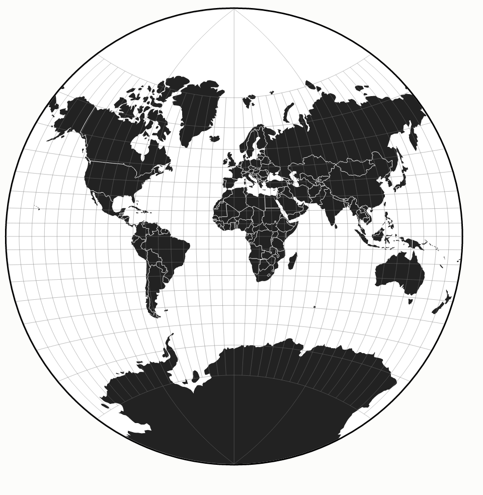
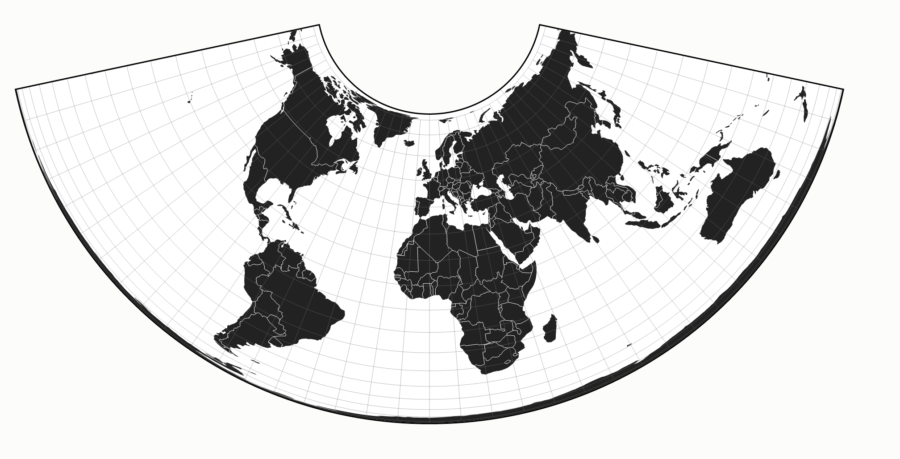
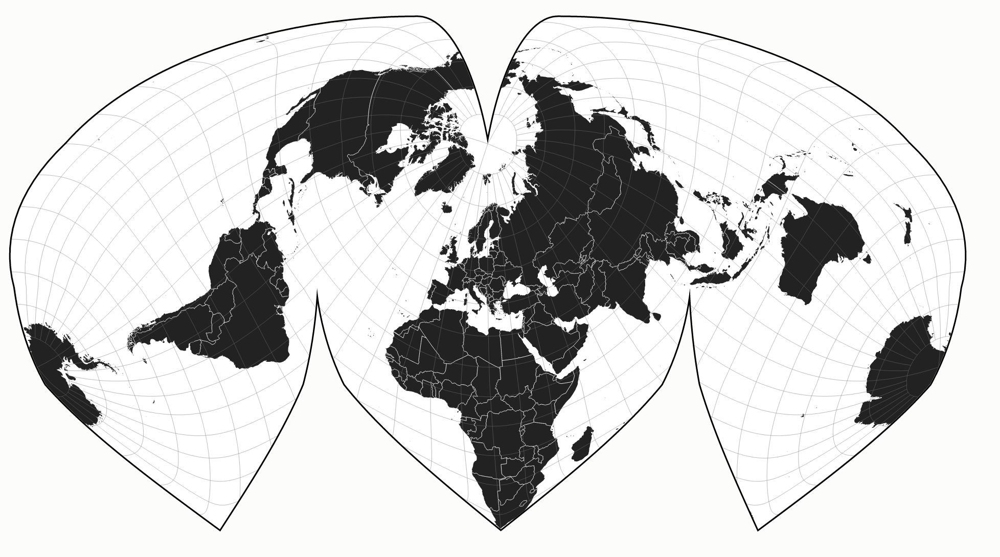

A few weeks back President Jacob Zuma stated that all the continents in the world would fit into Africa.
I thought it useful to visualise the process of trying to stuff countries into the African continent. It turns out that all the countries of the world would fill Africa four times over (excluding Antarctica, I'll get back to this later).
So what to do? The process of converting from a 3D object (say the Earth) into a 2D plane (say a map) is called projection. Imagine you were standing in the middle of a translucent globe with a torch. Standing in the centre and shining your light through the continents would project them onto the wall. Doing this, you would only manage to project a part of the Earth onto the wall.
Suppose you rolled the Earth continually on the wall as you went. That way you would manage to project all the way around the Earth onto your 2D plane. Alternatively, think of the world as a round stamp covered in ink. As you rolled it on a piece of paper, you would leave continent-shaped ink marks on the paper.
That project would work well enough at the Equator but things start to get weird the further you go north or south as shapes begin to stretch. Over the years, cartographers have devised different ways of addressing this problem. Unfortunately due to orange peeling problem, each projection needs to make certain compromises.
For instance Van der Grinten’s world projection tries to make a aesthetically pleasing map but the result doesn't mantain the size of countries and shapes tend to distort, especially at the poles.

The Albers equal-area conic projection ensures that areas of countries are preserved but shapes are not. This is a good projection for proving President Zuma's claim to be incorrect.

Some of them are plain weird like this Sinu-Mollweide projection.

But geometry aside, maps are political and influence the way we understand the world. Here is the standard Mercator projection that we are all familiar with.
Notice how small Africa is? Europe and North America are larger than they should be. Antarctica is massive. The Mercator map is centred on Greenwich - an historic artefect as a result of the publication a series of maps by a British astronomer. Previously, Paris was considered to be the centre of the map. This map is a relic of Euro-centric colonial days.
Another thing to consider is why north happens to be up? There is no concept of up in space. All of our maps could quite conceivable show Africa at the top and Europe at the bottom. Why not?
It's somewhat mind-blowing when you look at it but not at all unreasonable. Surprisingly, maps were not always drawn with north at the top. Egyptian maps were oriented with the flow of the Nile which drains into the Mediterranean. Upper Egypt is located further to the south and confusingly, Lower Egypt is to the north. In fact, some older maps have East at the top. Interestingly, the etymology of the word 'orientation' comes from the world Orient, which may explain the reason for East-up maps. Read more about this history of map orientation here.
This North-South divide has negative connotations. South is associated with poverty and lack of development. These negative connotations don't only apply to the developing world. Northern Italians are considered hard working with Southerners are lazy and less educated. Examples abound: hard-working Northern Europeans vs the lazy Southern countries. The North suburbs of Johannesburg vs the Southern ones. Our language is also full of positive connotations for up e.g. 'on top of the world' and negative for down e.g. 'down in the dumps'.
It turns out that upside-down maps are a thing. One of the first of these was produced by an Australian tired of his country being called "Down Under". He turned the traditional orientation on its head, literally. You can find an interesting article on these subversive maps here.
In summary, maps, as with many visualisations, are simply representations of the world through the lens of their creator. The marketing industry is notorious for their use of misleading graphs and pie charts. Maps are no less immune to manipulation.
Image credits:
Christopher Sessums (https://www.flickr.com/photos/csessums/11427686175/)
keishkakeishka (https://www.flickr.com/photos/keishka/2752119942/)
Gerry Machen (https://www.flickr.com/photos/gellscom/13331625404/)
fdecomite (https://www.flickr.com/photos/fdecomite/17311156985/)
Mike Bostock
{kind=link}